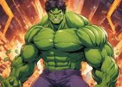
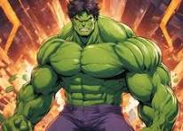

Transformation
It all started in Saint Louis, MO, when I was exposed to a gamma radiation experiment gone wrong. I felt an overwhelming surge of power. My body grew in size, and my skin turned green. I had become the Incredible Hulk!
It all started in Saint Louis, MO, when I was exposed to a gamma radiation experiment gone wrong. I felt an overwhelming surge of power. My body grew in size, and my skin turned green. I had become the Incredible Hulk!
Not long after my transformation, the city was under attack by a giant robot. Without hesitation, I leaped into action. With a single punch, I sent the robot crashing into the mountains, saving countless lives.
As the world looked to me for protection, a new threat emerged: a powerful sorcerer who sought to control the planet. The final battle was fierce, but with my strength and determination, I overpowered the villain and restored peace to the world.
With the villain defeated, I stood as the world's protector. The people celebrated, and I finally found peace, knowing that the world was safe. But I remain ever vigilant, ready to protect humanity whenever the need arises.